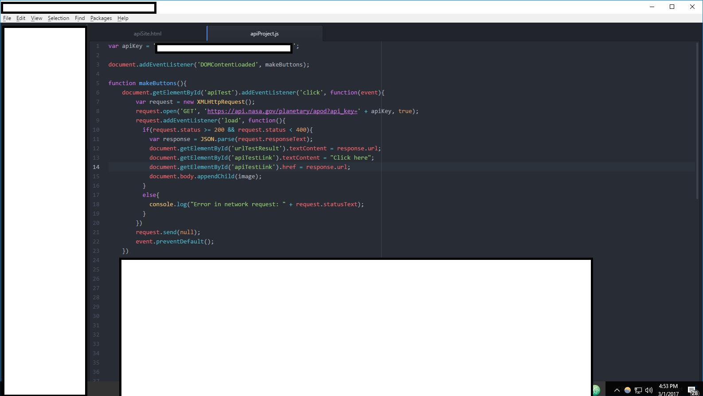
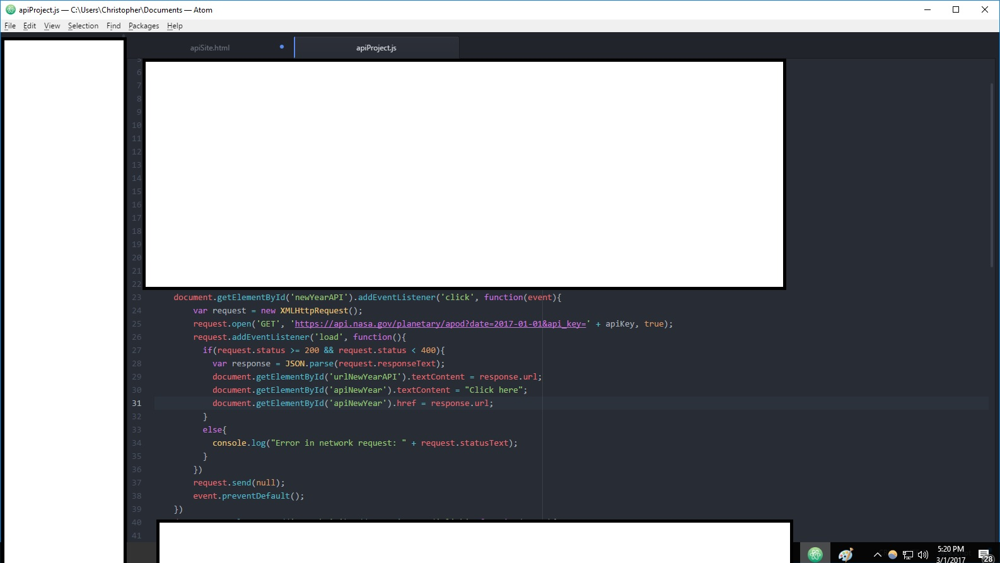
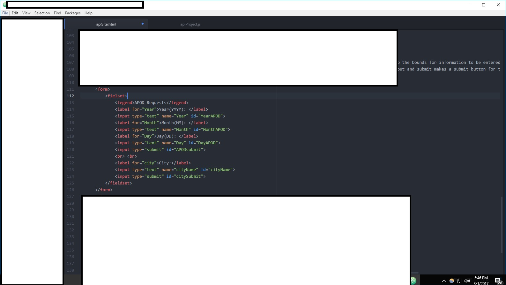
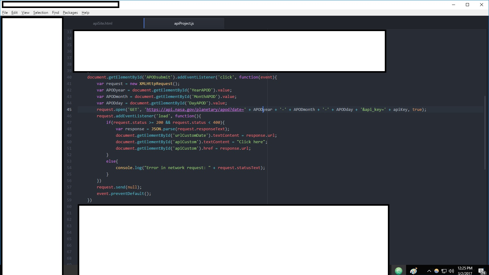
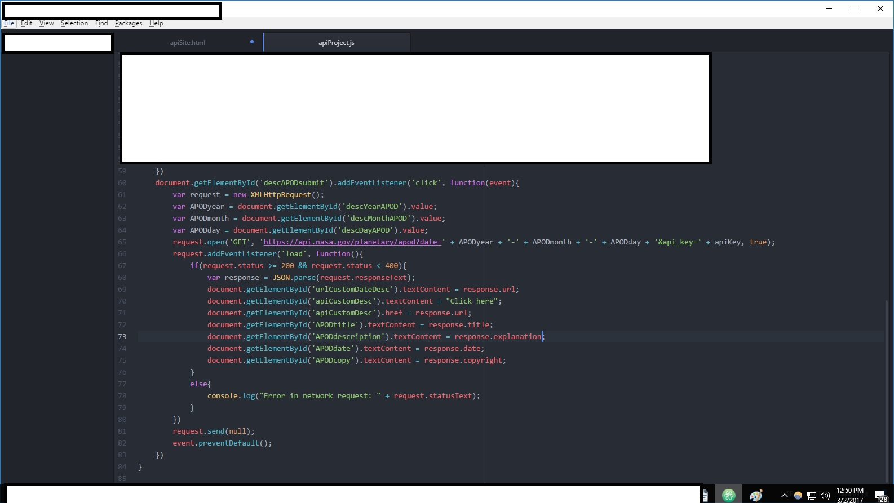

This simple website will show you, the fortunate soul who managed to find it, a simple and easy way to use an API, specifically the one for NASA.
Yes, that NASA, the US government-run space agency. Turns out they have a few easy tools for using their site and getting to some of their databases.
This tutorial will show you how to access some of them, particularly their Photo of the Day.
Yes, suprising as it is, you the user, through this tutorial, will learn how to access information directly from NASA. Pretty cool, huh?
During this tutorial, you'll need to go to NASA's website at https://api.nasa.gov/index.html and learn how to get your own API key.
We'll explain all that during the tutorial though, so don't worry.
What IS an API?
If you've gotten this far, you probably noticed a term being thrown around, "API". As such, you might not be familiar with what that is or what it means.
An API is short for an "Application Program Interface". Essentially, an API allows a user to interact with a certain site in a particular way.
An API is incredibly handy for setting up a program or site to interact with other sites, but it does so doing its own sort of data.
APIs can hold a lot of different kinds of data, making them very customizable, but also making them slightly difficult to work with without the right tools.
There are two things you can do with APIs. Many allow a user to "Get" information from the site and sort through it themselves.
You can also "Post" information to a site through an API, to send data to another site or server. Many APIs will then have a way to get access to that data another way.
For now, for the NASA API, we'll concern ourselves with the "GET" functionality of APIs to get information from NASA (with their permission of course).
How Do we get an API?
Now that we have an idea of what things are, it's time to begin the actual process of doing something with all this information.
Before we can "GET" anything with an API, first we need to acquire an API key that'll actually give us access to the APIs themselves.
So, let's see how we go about getting an API from the NASA API site I linked above.
So, the site I linked you to should look something like this:
Now that we're there, let's apply to NASA for access with our very own API key (ask nicely!). So, select the "Applying for an API key" link there in that first paragraph.
You should be redirected to a page that looks like this:
Once you've filled in your information and sent it to NASA, you should be at a page that looks like this (I've editted out the information for MY API, but yours should appear in those boxes):
Now we have our very own NASA API! So let's go see what we can do with it!
Let's Start Using the API for NASA's APOD
Having and know about an API is all well and good, but let's get down to the actual code and start using the API we have.
The APOD (Astronomy Picture of the Day) is a well-kept API that has some complexity to it, but for the most part is pretty easy to use.
Not to mention, the APOD is a great picture and being able to access it and have it as a part of your own site isn't that hard.
So let's get started on our code for accessing the APOD. Fortunately it's a GET API, so the code itself shouldn't be too hard.
The APOD API only has a few parameters, so let's get started by just getting the APOD for whatever day today happens to be.
Fortunately "today" happens to be the default for the API. Don't worry, we'll get around to getting the APOD for specific days (if they exist).
Fortunately, GET APIs can be run straight through a URL, so we can access today's APOD using our own API KEY.
The basic URL setup is "https://api.nasa.gov/planetary/apod?api_key=DEMO", where we fill in "DEMO" with our own API key we just got.
I'll go ahead and attach a link to the APOD using my own API key so you can see whatever today's is.
So go ahead and follow this link to see it.
Not quite what was expected huh? It's not so much an image as a bunch of text. The text itself is important though as it contains the information about the APOD.
So now we need to go through that data and get that image we want so bad. Fortunately, there appears to be a "url" option in there, so that probably holds the image we need.
For now, go ahead and hit this Submit button to see the URL for the APOD and I'll go over how we got there following that. Let's see the API in action!
URL:
That's more like it! A link straight to the image with a url printed out to boot! So, how did we get from a bunch of text gibberish to here?
With the help of a convenient feature called JSON, which might look a bit difficult to navigate to the human eye, but makes sense to the program if we make it right.
So, how do we do this? Well I'll show you.

Above is an image of the code I used to get that example you just saw, written in JavaScript. Let's go through it step by step.
The apiKey variable holds the api key we got in the first part of all this, so we can easily add it where we need it.
Then we make a function to add functionality to that submit button you saw there. Let's go through that.
We need to make a XMLHttpRequest to handle that bunch of text we saw earlier. Then, the next function makes a GET request to the api site using our API key (the text we saw earlier).
Following that is a function that kicks in when the user hits submit.
Response is a variable that'll be used to handle the bunch of text we got earlier using JSON, which we mentioned earlier.
The first line after the JSON parse will print the url of the image, taken from that text we saw from the API request.
Then, we add some text to a href link that'll allow the user to click it. Then, we take that url and append it to the href part of that link text, so now it'll send the user to the site.
That's all assuming we did it right, the following portion "else", prints to the console the error message we get if it didn't go so well.
That's not terribly important though, so don't stress about it.
Request.send sends a null to the API as GET requests don't need to send anything else. So don't worry right now. A POST request would, but we're focussing on GET.
The preventDefault just makes sure the page doesn't refresh after the user hits submit so they'll actually see something.
Let's Make it More Complicated
That wasn't too bad, right? That's all well and good for today's APOD, but what happens if we want another day's APOD?
Thankfully, the APOD API has some functionality that'll allow that! So let's dive in!
The date functionality allows the user to enter some data in the format of YYYY-MM-DD. Of course, it's ideal we enter that information exactly as so.
So let's take a look at the APOD for New Year's Day 2017 using what we talked about! Go ahead and hit submit below!
URL:
Great! It works! That's definitely a different image from today's, so what'd we do different? Well, let's take a look:

Well that doesn't look too different from earlier does it? If you look close all we added was "date=2017-01-01&" between the "?" and "api_key=".
Not so bad huh? We can add any date we want in there and it'll do the same thing we've been doing! Pretty nifty huh?
Let's let users Customize!
First we'll need to introduce forms. Forms are a way of allowing users to enter information that we, the programmer, can then use.
Below is an example of a form implementation in HTLM, which we can then write JavaScript code for in order to use.
In our example, we need to allow the user to enter the date for which they want to receive an APOD.

Essentially, we create a space in a form for the user to enter data. The form bound sets the form up. Fieldset sets up the bounds for information to be entered.
Legend is the title of the form. Labels are text that tell the user what to enter. The input type text takes in a text input and submit makes a submit button for the user to submit the information.
In this example, I've decided to split up the year, month, and day sections to make this a bit easier, if a bit lengthier.
So, that's the HTML implementation, so let's go look at the JavaScript implementation.

What's different here? Well, first we're going to need multiple variables to hold the year, month, and day that the user will enter for the form, as opposed to giving them only one specific day.
Other than that, the only thing that's different is the URL we're sending the GET request to.
Now, instead of filling it out ourselves, we're using the data the user gave us and filling out the request with that information.
That's all that's different. And for getting the APOD picture that's all that's needed.
Feel free to go ahead and try it out below! Try whatever day you want, but be warned, if the APOD doesn't exist for that day, it might not work.
URL:
The Rest of the APOD API
Naturally, there's more to the APOD API than just an image. As you might remember from the bundle of text we saw towards the very beginning, there's much more to the APOD API.
Specifically, there's a date, copyright, explanation, title, media type, and service version. For the rest of the tutorial, let's concern ourselves with those first four.
The date, explanation, and title are all pretty self-explanatory in regards to each image. The copyright, from what I can tell, is the name of the person credited with taking the picture.
So, now, let's finalize our interaction with the APOD API by adding these things to the output we give the user. For now, why don't you give it a shot using the form below:
URL: Title: Explanation: Date: Copyright:
As you can tell, we used the same form as before, since all we really need from the user is what date they want this information from.
Additionally, it seems that we have correctly gotten the information we need from the APOD API as all the fields seem to fill out correctly.\
I'll leave you to determine how you want to lay out your API information in regards to HTML. I just used a bunch of spans.
There's going to be some slight editing we need to do in JavaScript though, so let's take a look at that.

So what's changed this time? Well, now we're accessing other parts of the API other than the url that we used to get the image.
Namely, we're accessing "title", "date", "explantion", and "copyright", as I said we would earlier. It's the same format as getting the url, just with different call names.
Then, we're taking those strings from the response we got and putting them in certain spans following the declarations we have hard-coded in our HTML file.
Once that's done, we've done everything we did in the earlier form, but now we're getting more than just the url and a link.
Of course, you don't have to get all this information. You could take none of it if you don't want it.
Or, you could take even more information from the APOD API, including the high-definition url, media type, or service version.
Now that you've gone through this tutorial introduction to APIs, the APOD and other NASA APIs are yours to explore!